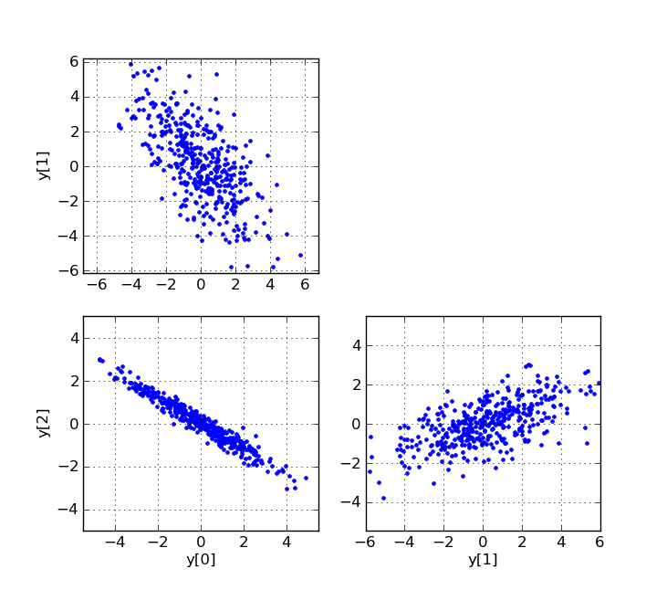

*Note:* This cookbook entry shows how to generate random samples from a multivariate normal distribution using tools from SciPy, but in fact NumPy includes the function `numpy.random.multivariate_normal` to accomplish the same task.
To generate correlated normally distributed random samples, one can first generate uncorrelated samples, and then multiply them by a matrix C such that C*C^T^ = R, where R is the desired covariance matrix. C can be created, for example, by using the Cholesky decomposition of R, or from the eigenvalues and eigenvectors of R.
"""Example of generating correlated normally distributed random samples."""
import numpy as np
from scipy.linalg import eigh, cholesky
from scipy.stats import norm
from pylab import plot, show, axis, subplot, xlabel, ylabel, grid
# Choice of cholesky or eigenvector method.
method = 'cholesky'
#method = 'eigenvectors'
num_samples = 400
# The desired covariance matrix.
r = np.array([
[ 3.40, -2.75, -2.00],
[ -2.75, 5.50, 1.50],
[ -2.00, 1.50, 1.25]
])
# Generate samples from three independent normally distributed random
# variables (with mean 0 and std. dev. 1).
x = norm.rvs(size=(3, num_samples))
# We need a matrix `c` for which `c*c^T = r`. We can use, for example,
# the Cholesky decomposition, or the we can construct `c` from the
# eigenvectors and eigenvalues.
if method == 'cholesky':
# Compute the Cholesky decomposition.
c = cholesky(r, lower=True)
else:
# Compute the eigenvalues and eigenvectors.
evals, evecs = eigh(r)
# Construct c, so c*c^T = r.
c = np.dot(evecs, np.diag(np.sqrt(evals)))
# Convert the data to correlated random variables.
y = np.dot(c, x)
#
# Plot various projections of the samples.
#
subplot(2,2,1)
plot(y[0], y[1], 'b.')
ylabel('y[1]')
axis('equal')
grid(True)
subplot(2,2,3)
plot(y[0], y[2], 'b.')
xlabel('y[0]')
ylabel('y[2]')
axis('equal')
grid(True)
subplot(2,2,4)
plot(y[1], y[2], 'b.')
xlabel('y[1]')
axis('equal')
grid(True)
show()
Scatter plots of three projections of the random samples:
Compiling Extension Modules on Windows using mingw
Enter search terms or a module, class or function name.